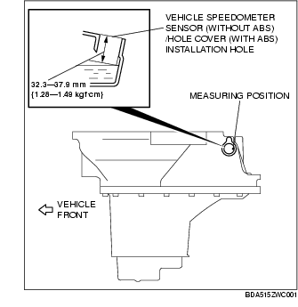

Transaxle oil replacement [F35M-R]
1. Park the vehicle on level ground.
2. Remove the vehicle speedometer sensor (without ABS)/hole cover (with ABS). (See VEHICLE SPEEDOMETER SENSOR REMOVAL/INSTALLATION (WITHOUT ABS) [F35M-R].)
3. Remove the drain plug with the washer.
4. Drain the oil into a suitable container.

5. Install a new washer and the drain plug.
Tightening torque6. Add the specified amount and type of oil through the vehicle speedometer sensor installation hole until the level reaches as shown in the figure.
Manual transaxle oil- Grade: API Service GL-4 or GL-5
- Viscosity (all-season): SAE 75W-90
- Viscosity (above 10 °C {50 °F}): SAE 80W-90
- Capacity (approx. quantity): 3.04 L {3.21 US qt, 2.68 lmp qt}
7. Install the vehicle speedometer sensor (without ABS)/hole cover (with ABS). (See VEHICLE SPEEDOMETER SENSOR REMOVAL/INSTALLATION (WITHOUT ABS) [F35M-R].)